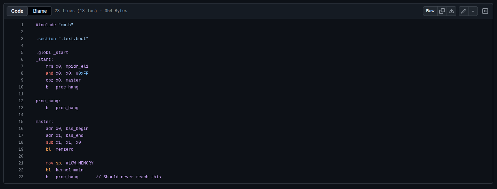
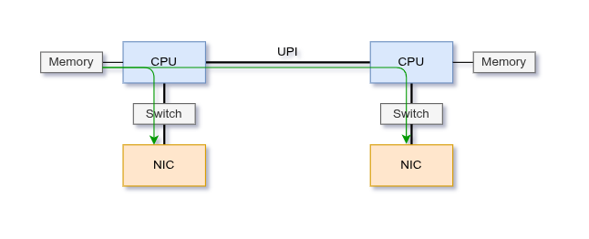
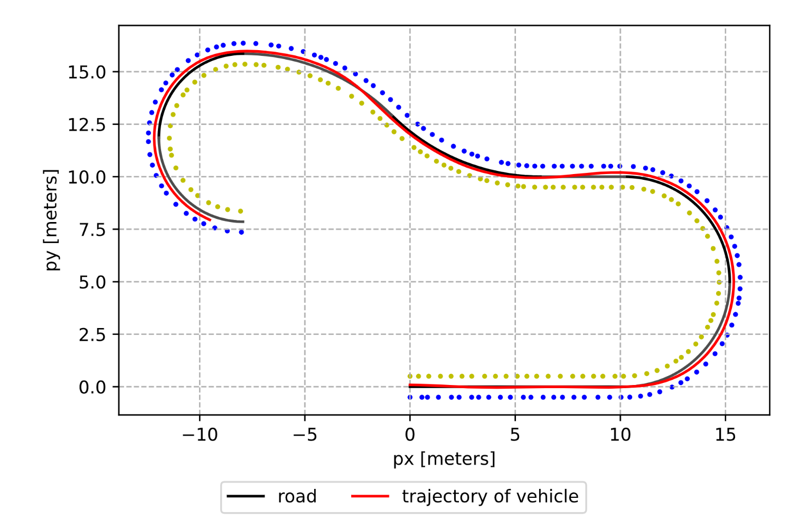

Advanced Operating Systems
Built core OS services on top of the Barrelfish capability-based microkernel.
Read More →Systems Programming • Machine Learning • Networking
Welcome! I’m a student at ETH Zürich, specializing in Systems Programming, Machine Learning and Networking. This website contains a collection of my projects and research.

Built core OS services on top of the Barrelfish capability-based microkernel.
Read More →

Applying Active Learning to fine-tune LLMs.
Read More →


Use two-dimensional encodings for algorithmic reasoning in transformers.
Read More →